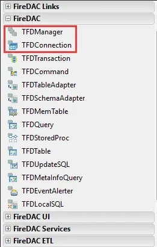
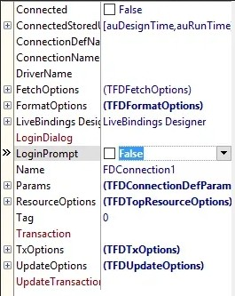
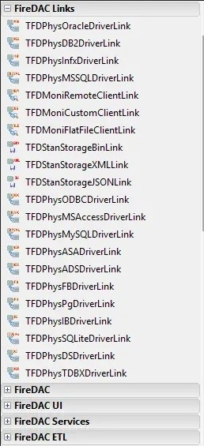
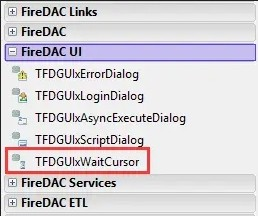
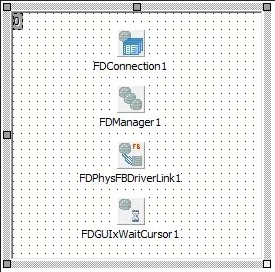

从其它平台迁移而来
-
建立
DataModule -
在
FireDAC选项卡中找到我们的主角TFDConnection控件，并放到DataModule窗体上，把LoginPrompt设为False，这样在连接时就不会弹出登陆对话框了。然后再找到TFDManager控件，也放到DataModule窗体上，并且把Active属性设为True，这样一来，在引用了本单元的其它单元中，就可以直接把FireDAC控件的Connection连接到本单元的TFDConnection了。



- 在
FireDAC Links选项卡中找到所需要连接的数据的驱动链接控件，放到DataModule窗体上。本例中使用的是FireBird数据库，因此就选择了TFDPhysFBDriverLink，其它数据库参照执行（本人接触的数据库不多，各数据库间的差异不敢妄言，但整体使用思路和方法应是不差的）。

- 在
FireDAC UI选项卡中找到TFDGUIxWaitCursor控件，放到DataModule窗体上。该控件其实只是个光标，可修改ScreenCursor属性来改变光标。


至此，拖控件的工作基本上就做完了，下面该写代码了（虽然代码中有相当一部分工作可以直接在设计器中修改属性来达到，但建议用代码来实现，一方面便于DEBUG，另一方面也易于进行数据库的变更、迁移等）。

- 在
DataModule的Create事件中写入类似以下的代码（也可写在其它地主，但要保证必须在任何数据库操作代码前运行）：
|
|
注意：FDConnection1.Params.Add('CharacterSet=utf8');这句是设置客户端连接数据库是默认使用的字符集，一定要与所连接的数据库使用的默认字符集一致，否则将会发生很多奇怪的事情。而且该项无法在设计器的属性中进行设置！